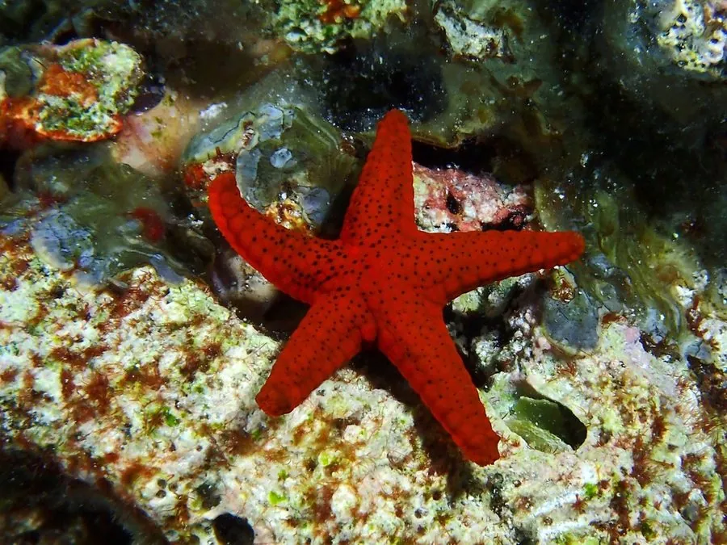

其他无脊椎动物 · 动物界
红海星 Fromia milleporella

体盘小而腕短、通体鲜红带细密孔纹的海星，栖于热带珊瑚礁浅水，取食藻类与有机碎屑，性情温和。
- 分类
- 门棘皮动物门纲海星纲目瓣棘海星目科蛇星科属单孔海星属
- 栖息环境
- 热带珊瑚礁礁坡、潟湖与礁池的浅水岩面
- 地理分布
- 印度洋至西太平洋热带海域，自东非至澳大利亚北部
- 保护级别
- 常见种，无专门保护级别；水族贸易采集是潜在压力
物种志
红海星的口盘直径约五至七厘米，通常有五腕，腕短而粗，末端钝圆，体形呈五角星状。体表鲜红至橙红色，密布细小的白色或淡色孔纹，像撒了一层芝麻，这是它得名的特征之一。体表粗糙，有颗粒状突起，管足细小，靠管足在礁石上缓慢移动，行动十分迟缓。
它分布于印度洋至西太平洋的热带珊瑚礁，从东非、红海到东南亚、澳大利亚北部，栖息在礁坡、潟湖和礁池的浅水区，常停在珊瑚和岩石表面。它以藻类、有机碎屑和小型无脊椎动物为食，性情温和，不啃食活珊瑚。它雌雄异体，繁殖期释放配子，幼虫浮游后沉降。它因颜色鲜艳而常被采集用于水族贸易，采捕应遵守当地规定。
形态与习性
- 体径约五至七厘米，五腕短粗
- 体色鲜红至橙红，密布淡色细孔纹
- 食性藻类、有机碎屑与小型无脊椎动物
- 运动管足缓慢爬行，行动迟缓
- 性情温和，不啃食活珊瑚
- 利用常见于水族贸易，需遵守采捕规定
趣味知识
- 它身上那些细密小孔是管足伸出的地方，红底白点十分醒目。
- 它爬得极慢，一天也挪不了多远，靠的是不挑食。
- 它不吃活珊瑚，是少数适合放进礁岩缸的海星之一。